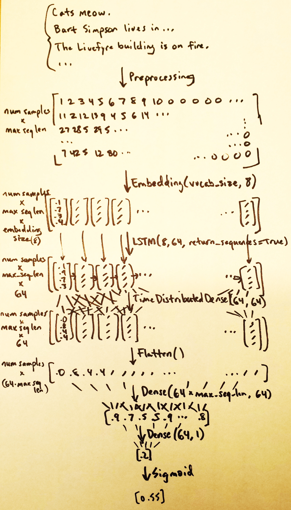

vocab_size = 456
max_seq_len = 256
model = Sequential()
model.add(Embedding(vocab_size, 8))
model.add(LSTM(8, 64, return_sequences=True))
model.add(TimeDistributedDense(64, 64))
model.add(Flatten())
model.add(Dense(64 * max_seq_len, 64))
model.add(Dense(64, 1))
model.add(Activation('sigmoid'))
|
 |